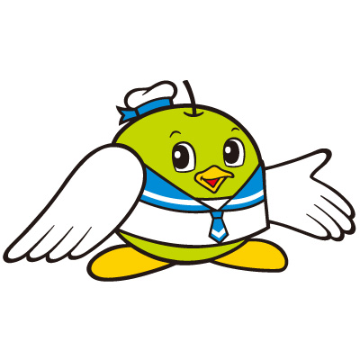

勝手に「＃絵文字で鳥取県」キャンペーン/とりネット/鳥取県公式サイト
本文の保存版（2026-11-22）
出典URL：https://www.pref.tottori.lg.jp/286377.htm
- 色変更
- 標準
- 黒
- 青
- 県外の方へ
- 分野で探す
- 組織で探す
- 防災 緊急
- メニュー
緊急情報
注目情報
- （県民の皆様へのお願い）事前防災の徹底について
- 鳥取県では19日夜から21日頃にかけて山地を中心に降雪、積雪の可能性があります
- 雪に関する注意情報
- 鳥取県の原子力防災WEBサイトの復旧について
- あんしんトリピーなびの利用を再開しました（10月24日追記）
- 鳥取県防災情報ポータルの運用を再開しました
- 航空自衛隊の無人偵察機墜落に関する情報
- 令和８年熊本地震被災地支援特設ページ
- 風水害に関する注意情報
- 令和8年4月20日の三陸沖を震源とする地震に関する情報連絡会議・鳥取県の対応
- 強風時の屋外での火の使用は絶対に止めましょう
- 熱中症に関する注意情報
- 令和６年能登半島地震被災地支援特設ページ
- 北朝鮮によるミサイル発射に関する情報
- 高病原性鳥インフルエンザへの対応
- 漂着したアザラシやオットセイなど海獣類にご注意ください。
- 災害に便乗した悪質商法に十分注意を！
- 豚熱に関する情報
- 新型コロナウイルス感染症特設サイト
- 在宅療養されている方等の避難（ご連絡ください）
防災・危機管理情報
- 鳥取県の危機管理(危機管理ホームページ)危機管理対策／ 日頃の備え／ 災害情報／ 役立つ情報..
- 鳥取県防災情報雨量情報／ 土砂災害警戒情報／ 河川情報／ 気象情報..
- 災害情報ダイヤル(災害情報等の問合せ)電話：0857-26-8100
救急情報
とっとりおとな 救急ダイヤル(#7119)
とっとり子ども 救急ダイヤル(#8000)
全国版救急受診アプリ「Q助」(外部リンク)
とっとり医療情報ネット
とっとりジオマップ「医療機関情報」
全国AEDマップ[ウェブ版] (日本救急医療財団へのリンク)
全国AEDマップ[iPhone版、Android版] (日本救急医療財団へのリンク)
AEDの設置場所
サイト内検索
メニューから探す
- 県の紹介
- 県外の方へ
- 分野で探す
- 組織で探す
- ネットで手続
広報課所管コンテンツ
- 知事記者会見録
- 鳥取県からのお知らせ
- 県政テレビ「#キニナルとっとり」(外部リンク)
- 動画ちゃんねる
- とっとり県政だより
主な取組
- パブリシティ
- 広報紙
- とりネットの管理・運営等
- 情報発信
- ソーシャルメディアの利用
- とっとりふるさと大使
- チャンピオン栄誉賞
- 県章及び県旗の使用
- その他の広報施策
特設サイト
- ポケモン サンド×鳥取県
広報課
- 窓口・連絡先
鳥取県広報連絡協議会（外部サイト）
広報行政の向上発展と鳥取県のイメージアップに寄与することを目的とした任意団体です。
- ふるさと来LOVEとっとり
- 「とっとりNOW」の発行
勝手に「＃絵文字で鳥取県」キャンペーン
入賞作品紹介
たくさんの投稿を、ありがとうございました！
全部で３３６の投稿作品の中から、以下の投稿を入賞作品に選出しましたので、ご紹介します。
※ご本人の許可を得たもののみ掲載しています。
おしどり（おしどり）賞
- おしどり賞受賞作品１ https://twitter.com/PixMum/status/1154655849412882432
- おしどり賞受賞作品２ https://twitter.com/Gorilla_1102_/status/1151758163042942976
- おしどり賞受賞作品３ https://twitter.com/akabe_NT/status/1151768743522947072
- おしどり賞受賞作品４ https://twitter.com/tokitoki04/status/1152273372849426434
- おしどり賞受賞作品５ https://twitter.com/39miku_miku39/status/1151745365911068672
- おしどり賞受賞作品６ https://twitter.com/sunausagisan/status/1151798791692935168
- おしどり賞受賞作品７ https://twitter.com/rakuno_yabu/status/1152058304144666625
トリピー（トリピー）賞
- トリピー賞受賞作品1 https://twitter.com/tsutti0126/status/1151723401590874112
- トリピー賞受賞作品2 https://twitter.com/mizu_no_rakuen/status/1151725885822648320
- トリピー賞受賞作品15 https://twitter.com/hosinosekai/status/1155777440200847360
- トリピー賞受賞作品16
- トリピー賞受賞作品3 https://twitter.com/TamuraP_tottori/status/1153109448606359552
- トリピー賞受賞作品4 https://twitter.com/namak/status/1155897222535372800
- トリピー賞受賞作品5 https://twitter.com/sakura_maikura/status/1151706774933626880
- トリピー賞受賞作品6 https://twitter.com/lao0827/status/1151707077116456961
- トリピー賞受賞作品7 https://twitter.com/lollipop_Kittys/status/1151785109453803520
- トリピー賞受賞作品8 https://twitter.com/philis_foot/status/1151823971332964355
- トリピー賞受賞作品9 https://twitter.com/sanyo_paper/status/1152052002328727552
- トリピー賞受賞作品10 https://twitter.com/shiroie1/status/1152070387426983936
- トリピー賞受賞作品11 https://twitter.com/S2vlmVHgulziF14/status/1153502304626077696
- トリピー賞受賞作品17 https://twitter.com/xylo_shara/status/1154395912497586177
- トリピー賞受賞作品12 https://twitter.com/fqsirolove/status/1156560816209928193
- トリピー賞受賞作品13 https://twitter.com/sakkuru_ika/status/1156573270801436672
- トリピー賞受賞作品14 https://twitter.com/yuuki_9711/status/1151716804043001856
実施内容
7月17日の世界絵文字デーにおけるTwitterと県のコラボレーション企画にあわせ、勝手に「#絵文字で鳥取県」キャンペーンを行います！
Twitterで、絵文字７文字で鳥取県を表現して投稿すると、入賞者にはTwitter Japan特製グッズと二十世紀梨をプレゼント！
(絵文字例1)砂・砂・ラクダ・砂・砂・ラクダ・スイカ（すべて絵文字）
(絵文字例2)砂・暑い・スイカ・梨・ラーメン・おいしい・鳥（すべて絵文字）
募集期間
- 令和元年７月１８日（木）から７月３１日（水）まで
応募方法
- Twitterで、トリピー＠鳥取県マスコットキャラクター(@tottoripref)のアカウントをフォローする
- 下記の３つの要素を全て入れて、Twitterに投稿する
・鳥取県を表現する絵文字７文字の組み合わせ
・ハッシュタグ「#絵文字で鳥取県おしどり絵文字」をつける
・おしどりの絵文字おしどり絵文字が出る対象のハッシュタグ（#鳥取・#鳥取県・#おしどり・#絵文字・#世界絵文字デー・#Emoji・#WorldEmojiDayのどれか）を１つ以上つける
賞品
おしどり（おしどり）賞 7名：Twitter Japan特製「湯呑み」と二十世紀梨をプレゼント

（トリピー）賞 17名：Twitter Japan特製「ノベルティセット」と二十世紀梨をプレゼント問合せ先
電話番号0857-26-7097 ファクシミリ0857-26-8122
電子メール kouhou2@pref.tottori.lg.jp
世界絵文字デーに、Twitter Japanと鳥取県が初コラボ！
7月17日の「世界絵文字デー」に合わせて、Twitter Japanが鳥取県とのコラボレーション企画を行っています。この企画はTwitterのロゴの「鳥」との鳥つながりで実現したもので、Twitter Japanが地方自治体と「鳥」つながりでのコラボレーションを行うのは全国で初めてです。
この企画では、Twitterで、「# 絵文字」「# 鳥取県」など、特定の8種類のハッシュタグをつけてツイートすると、文字の後ろに県鳥の「おしどり」の絵文字おしどり絵文字が自動で表示されます。
【期間】令和元年７月３１日（水）まで
【表示イメージ】
おしどり絵文字表示イメージ
コラボレーション企画の発表の際、Twitter Japanのブログで知事のメッセージが紹介されました！
知事メッセージ
最後に本ページの担当課 令和の改新戦略本部 政策戦略局 広報課
住所 〒680-8570
鳥取県鳥取市東町1丁目220
電話 0857-26-70200857-26-7020
ファクシミリ 0857-26-8122
E-mail kouhou@pref.tottori.lg.jp
パソコン表示へ切り替え
スマートフォン表示へ切り替え
Copyright(C) 2006～ 鳥取県(Tottori Prefectural Government) All Rights Reserved. 法人番号 7000020310000
地図で使用する画像
- トリピーの画像
https://www.pref.tottori.lg.jp/secure/1173237/toripi.jpg - トリピーの画像（予備）
https://www.pref.tottori.lg.jp/secure/509669/danberu.jpg